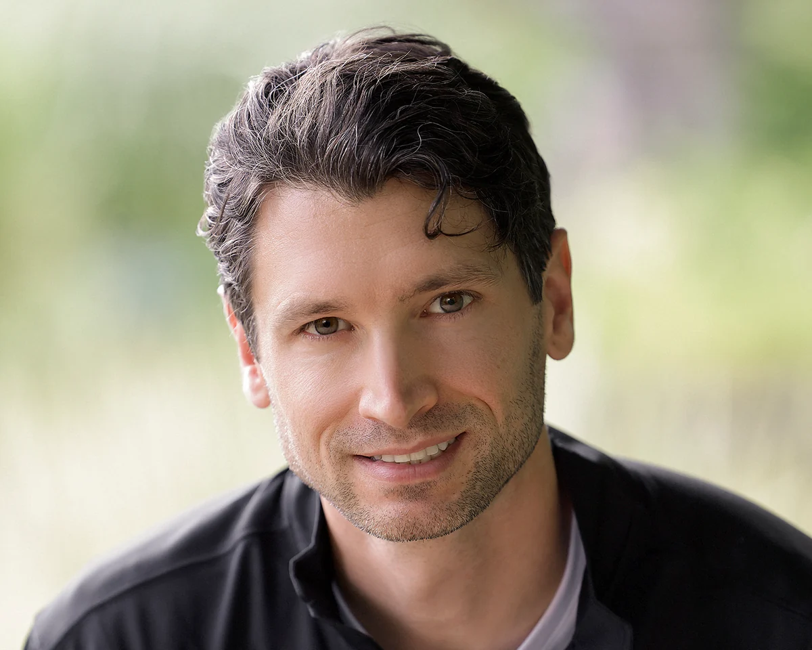

It’s Not Too Late to Save Your Marriage
Relationship turnarounds are possible, even after affairs, deep betrayal, or divorce papers have been filed.
With the right mindset, direction, and support, this crisis can become a turning point.
Does this sound familiar to you?
- You are walking on eggshells in your own home.
- You abandoned your own goals trying to keep her happy.
- Every serious conversation seems to make things worse.
- You fear she has started talking to lawyers, or someone else.
- You feel more stuck and alone than ever, unsure what to do next.
Maybe you have apologized, given her space, talked things through, read books, listened to podcasts, or even gone to counselling, yet nothing seems to change.
You may not be lacking effort.
You may simply be using the wrong approach.
Apologies and good intentions are rarely enough for things to change.
Coaching helps you understand what is going wrong, develop better relationship skills, and take consistent action.
- 01
Regain a sense of control
You can’t control your partner’s decisions, but you can change how you show up for your partner.
- 02
Break unhealthy patterns
Relationship problems often follow predictable cycles. Coaching helps you recognize your role, respond differently, and break those patterns.
- 03
Become stronger
The work you will do can benefit you beyond your marriage. You will become more grounded, self-aware, and resilient, as a partner, father, and leader.
A disciplined approach to relationship change.
I founded avoiddivorce.com to create a better path for men facing marital crisis.
For much of my life, I was drawn to understanding and solving complex problems.
Today, I bring the same disciplined approach to relationships, human behaviour and personal change.
I help clients identify patterns they may not yet see, adopt a more useful mindset, and recognize where they still have meaningful influence. From there, we translate insight into deliberate action.
I believe that, with the right framework, direction, and support, a marital crisis can become a turning point in a man’s life.

The work begins by helping you regain your footing.
Most men begin coaching feeling stressed, overwhelmed, reactive, or desperate to repair the relationship immediately.
The first priority is to help you regain a stable personal baseline so you can think clearly and act with greater intention.
- Understand what is driving the marital crisis
- Identify patterns contributing to distance, conflict, and lost trust
- Develop a structured, multi-stage action plan
- Build emotional regulation, communication, and relational leadership skills
- Restore confidence, self-respect, and personal direction
Through coaching, practical exercises, reflection, and accountability, you apply new skills to the situations you are facing and adjust the plan as circumstances evolve.
Over time, you build the judgement and confidence to navigate relationship challenges more effectively on your own.
While no one can guarantee how your partner will respond, consistent change can disrupt the patterns she has learned to expect, rebuild emotional connection, and give your marriage a genuine path towards recovery.
Lasting change begins by interrupting the cycle.
We help you break destructive patterns to give your relationship the best chance of success.
A structured path toward reconciliation.
Your coach will guide you through each stage, helping you apply the right priorities, skills, and actions as your situation evolves.
- 01
Stabilize
Establish the personal foundations you need to regain stability, think clearly, and act with intention.
- 02
Repair
Focus on relational repair and begin rebuilding trust, connection, and admiration.
- 03
Re-commit
Work towards renewed commitment and a shared sense of excitement about the future.
*Coaching supports personal growth and relationship development; outcomes vary depending on individual circumstances.
What Clients Are Saying
Real experiences from men who have worked with me to strengthen their relationship and save their marriage.
Placeholder: a short client quote will go here.
Placeholder: a second short client quote will go here.
Placeholder: a third short client quote will go here.
Guidance throughout the coaching process.
Our Head Coach helps clients apply the AvoidDivorce framework to the realities of their own relationship.
Through practical guidance, accountability, and steady support, she helps each client identify priorities, practise new skills, and move forward with greater clarity.
Questions You May Be Asking
Straight answers to some of the questions men often have before starting coaching.
Is it really possible to save my marriage if my wife says she’s done?
It may be. Relationships have recovered after prolonged conflict, emotional distance, betrayal, and discussions of separation or divorce.
No one can guarantee how your wife will respond. The goal of coaching is to help you understand what has contributed to the crisis, change the patterns within your control, and create the strongest possible conditions for reconciliation.
Can this work if my wife won’t participate?
Yes. Many men seek help after their wife has refused counselling or is emotionally withdrawn from the relationship.
You do not need to wait for her participation to begin changing how you think, communicate, regulate your emotions, and show up within the relationship. Consistent change can interrupt familiar patterns and give your partner a different experience of you.
How is this different from marriage counselling?
Marriage counselling generally works with both partners and focuses on the relationship between them.
This coaching begins with you. It is a structured process of personal development designed to help you gain clarity, adopt a more useful mindset, build practical relationship skills, and take purposeful action. The emphasis is not on persuading your wife to change. It is on becoming someone capable of changing the dynamic.
What if my marriage cannot be saved?
That possibility exists, and coaching cannot control another person’s decisions.
However, the work remains valuable. You can develop greater emotional resilience, self-awareness, confidence, communication skills, and personal direction: qualities that will benefit you as a man, partner, and father regardless of the outcome.
How long does the process take?
Every situation is different. Some men begin feeling calmer and more purposeful relatively quickly, while rebuilding trust and connection usually requires sustained effort over time.
This is not a quick fix. Meaningful change depends on the condition of the relationship, the patterns involved, and your consistency in applying what you learn.
How do I know whether coaching is right for me?
Coaching may be a good fit if you are willing to examine your own contribution to the relationship, learn new ways of responding, and consistently apply what you learn.
You do not need to accept all the blame, have all the answers, or feel certain about the future. You do need to be willing to take responsibility for the part that remains within your influence.
Is coaching a substitute for therapy or legal advice?
No. Coaching supports personal growth, mindset development, practical skill-building, and purposeful action.
It is not psychotherapy, crisis treatment, or legal advice. When a situation involves serious mental health concerns, abuse, immediate safety risks, or complex legal issues, additional professional support may be necessary.
What happens during the discovery call?
The discovery call is a relaxed, no-obligation conversation about your situation.
I will listen, answer your questions, explain how the coaching works, and help determine whether the program is a good fit. There is no sales script, and if I do not believe I can help you, I will tell you.
Start with a conversation.
The discovery call is a no-pressure opportunity to discuss your situation, ask questions, and see whether coaching is a good fit. If we don’t believe we can help you, we’ll tell you.
Apply for your free discovery call.
Tell us a little about yourself and what you’re facing. If the program appears to be a good fit, the next step is to choose a time for your call.